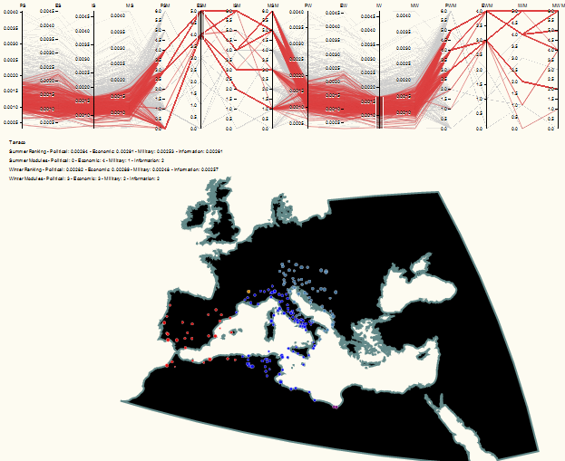
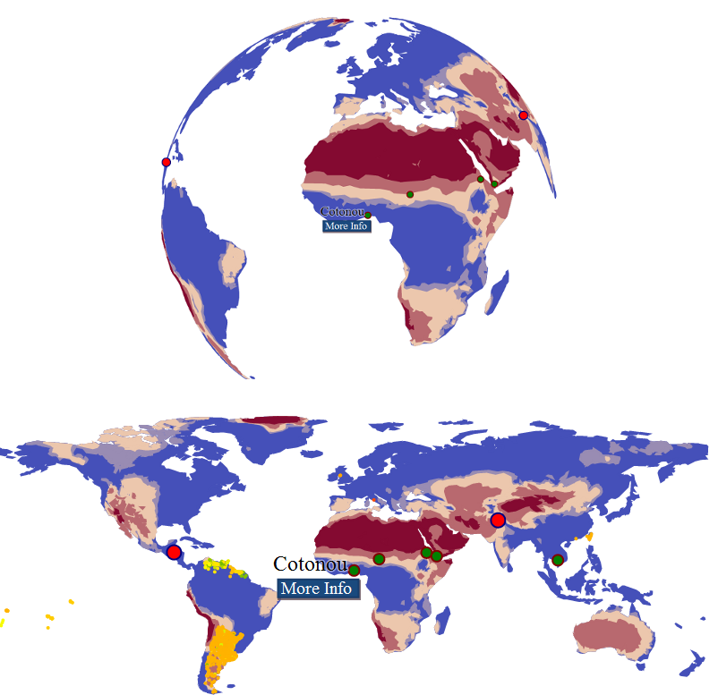

Last week I had the opportunity to give a short introduction to the JavaScript information visualization library D3. The intro, which took place at the Center for Spatial and Textual Analysis (CESTA) here at Stanford, was directed at an extremely broad audience, from skilled coders who wanted to learn a new library to scholars who wanted to better understand how information is represented dynamically and interactively. I’ve been using D3 more and more lately, for instance for the timeline in the ORBIS route-finder map, as well as for the Dynamic Distance Cartogram in ORBIS, but in both cases, these were rather simplistic uses of the library. D3.js is just one option for information visualization in the browser, and allows you to build a wide variety of rich interactive elements in your website, such as this force-directed graph I created a while back:
Still, it’s difficult to discuss a specific software library with such a diverse audience, because you want to explain to half the audience how to make something work, while explaining to the other half why it’s important that they understand how it works, and both constituencies are suspicious of the legitimacy of the latter claim. I’m convinced that there are enough faculty, students, alt-ac staff, and so on that such a general introduction is useful, but as you can tell with the title of this post, I have a my own suspicions. I’m also hamstrung by the fact that my interesting interactive material is still unreleased, and relates to the projects I’m currently working on here at Stanford.
Partly, though, that’s a dodge, since I doubt I’m a skilled enough coder to teach a real course on D3. So, while I’m happy to explain the sort of work I’ve done with it, I feel like coders who want to learn D3 should look to a pair of excellent resources: The first is a set of tutorials written by Scott Murray, who had to take a break from writing the tutorials to write an O’Reilly book on web visualization (which I expect will feature D3 prominently). The second is an interactive tutorial written by Vadim Ogievetsky, which demonstrates many of the most interesting features of the library.
As a point of reference, I used to code in Flash/Flex and really enjoyed ActionScript3, so my adoption of JavaScript (js) for information visualization was slow and cantankerous. I didn’t like the performance of js, or the way that it was structured or the coding environments or any number of other complaints that were, on reflection, rather naive. I’m not a software engineer, so I have no idea about professional or theoretical reasons why one language is superior or not, and my non-perfomance-related reasons for avoiding js boiled down to my comfort with the syntax and structure of ActionScript3.
The performance issue is still an issue, though, as is compatibility. D3 runs best on Webkit browsers (Chrome and Safari) and not so well on Firefox and not at all on Internet Explorer 8 or earlier. This is because D3 relies on scalable vector graphics (SVG) to render its graphical content, and SVG has only just begun to be supported as of IE9. Technically, you can use D3 to manipulate div elements and color them and thus show working dataviz on IE8, but I think it’s fair to say that D3 is not a suitable solution unless you’re comfortable losing anyone with an older browser.
Vector graphics like SVG are textual expressions of shapes that are displayed by your browser at runtime. They have numerous benefits, not least of which is that they can be styled and interacted with like any other element on a website, and also provide humanists with the pride of knowing that their visual objects are fundamentally textual. So for instance, to draw a circle with D3, one would code:
circle.attr("r", 5).attr("fill", "blue").attr("stroke", "red")
Which is the equivalent of telling the browser in natural language to, “Draw a circle with a radius of 5 [pixels] that’s blue with a red outline.”
There are other ways of displaying this kind of content in the browser, such as using the canvas element or using VML, which are especially attractive because they overcome the compatibility issues with a pure SVG solution. JavaScript libraries like Raphael, JIT, and Protovis are all alternatives to D3 that use canvas or VML or both. I prefer D3, which seems cleaner and thus more amenable to the non-standard data visualization that typically occurs in the work I do. D3 also has robust support for geospatial visualization, and so it’s easy enough for me to use similar code to show flows, networks, globes, flat maps, or parallel coordinates. This makes it easy to chain together, for instance, a map of sites in ORBIS and a parallel coordinates system that lets me analyze sites having divergent centrality values based or community membership that is determined using different definitions of edge weight.

Or to represent data using an interactive globe alongside or in place of a traditionally projected world map.

The globe spins, but there’s no way I could place 1000 tiny circles on it like I can on a flat map, so there are trade-offs within the trade-offs. At some point, I’ll actually manage to demo the interactive forms of all of these, and hopefully they’ll have a well-designed interface.